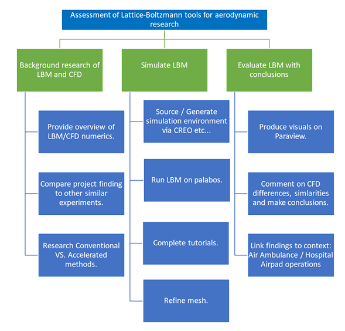
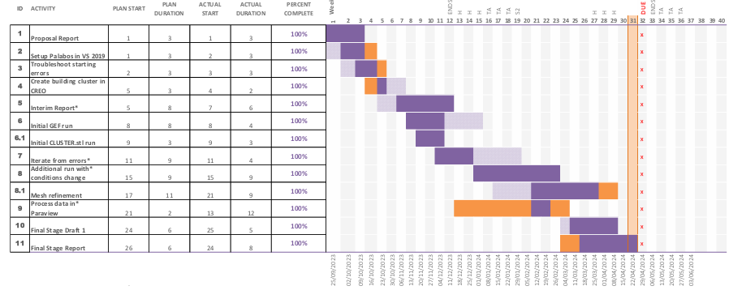
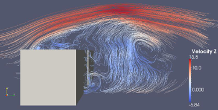

Assessment of Lattice Boltzmann Tools for Aerodynamic Research
A dissertation evaluating the Lattice Boltzmann Method (LBM) as an alternative CFD approach for aerodynamic research, using the open-source Palabos solver to simulate airflow around an urban two-building model. The project was motivated by unsteady wind effects around buildings and their potential impact on air ambulance operations in dense urban environments.
At a Glance
- Methods: Lattice Boltzmann Method (LBM), CFD validation, mesh resolution comparison
- Case Study: Two-building “channelling effect” / urban bluff-body flow
- Tools: Palabos (C++), Linux/MPI, Creo (CAD), ParaView, MATLAB
- Focus: Solver setup, stability, post-processing, comparison to wind-tunnel/CFD reference data
Problem Context
Flow around buildings can produce localised acceleration, turbulence, and recirculation—particularly within narrow passages between structures (the “channelling effect”). These unsteady conditions are relevant to operational safety for low-altitude aircraft and heliport planning. This project investigated whether LBM tools can practically simulate these aerodynamic features on limited computing resources, and how reliably results can be validated against established reference studies.
Simulation Workflow
The workflow began with familiarisation and benchmarking of Palabos using a standard 2D cavity case, before progressing to a 3D two-building configuration based on published literature. The building geometry was replicated in Creo and exported for use in Palabos, with simulations executed using a Linux environment and MPI to utilise available CPU resources. Post-processing in ParaView was used to extract key quantities (e.g., velocity profiles at pedestrian height, streamline patterns, and temporal stability behaviour), with additional plotting and processing performed in MATLAB where needed.
Key Results
The Palabos LBM setup successfully reproduced qualitative flow features expected for bluff-body urban aerodynamics, including recirculation regions behind buildings and accelerated flow through the channel. A resolution comparison (dx = 2 m vs dx = 4 m) indicated that finer spacing moved results closer to reference trends, but overall quantitative agreement with published velocity ratios and turbulence intensity data remained weak due to coarse grid limitations and measurement sensitivity at pedestrian height. Time-history monitoring of velocity components was used to assess solution stability and select appropriate sampling windows for post-processing.
Limitations & Lessons
The primary limitation was computational resource, which constrained grid resolution and therefore the ability to match validation datasets in highly turbulent near-ground regions. The project highlighted the importance of (1) selecting validation metrics that are robust to spatial resolution, (2) monitoring stability and convergence before extracting data, and (3) documenting solver setup and post-processing steps so the study can be repeated under improved hardware conditions. The work also reinforced the learning curve associated with open-source CFD tooling (Linux, MPI, C++ build environments), and how these skills translate directly into practical simulation workflow capability.